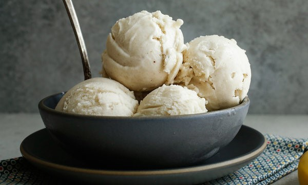

Overripe Banana Ice Cream
Ingredients
• Overripe Bananas
• Cocoa Powder
Directions
1. Slice the bananas and freeze.
2. Blend the frozen bananas until they reach ice cream-like consistency.
3. Add cocoa powder.
